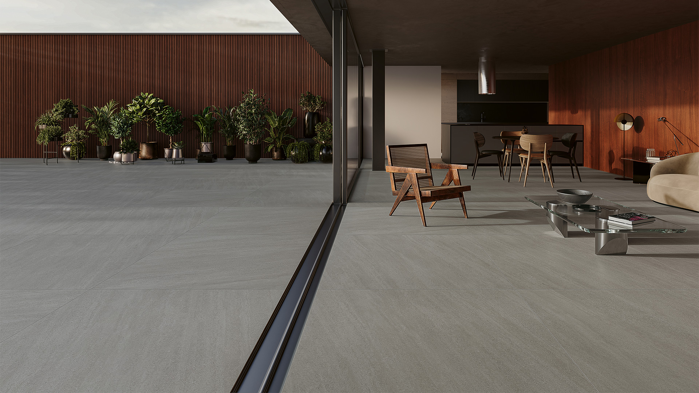

Sofisticação, conforto e praticidade para seu ambiente. Com visual
amadeirado
natural, oferece alta durabilidade, fácil limpeza e um acabamento elegante para diversos
espaços
internos.
Marmo (BLU SIENA)
Modernidade e sofisticação em cada detalhe. Com acabamento inspirado em
pedra
natural, proporciona um visual elegante, marcante e contemporâneo, ideal para banheiros,
paredes
e ambientes internos. Alta durabilidade e fácil manutenção.

Minerale (BASALTO)
Design contemporâneo com acabamento sofisticado. Inspirado no cimento
natural,
oferece um visual moderno, elegante e versátil, ideal para ambientes internos e
externos. Alta
resistência, durabilidade e fácil manutenção.